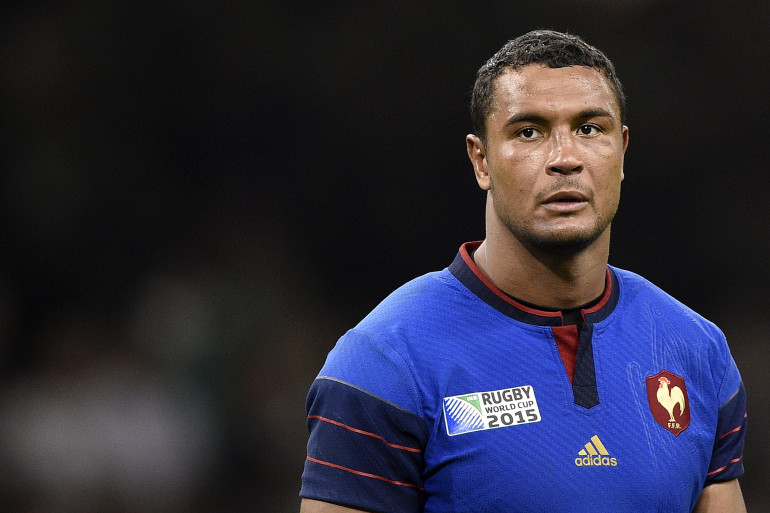

Le Rugby en France
Introduction
Le rugby à XV est un sport populaire pratiqué en France par 457 000 joueurs
licenciés. Il a été introduit en France au début des années 1870 par des
Britanniques, faisant ainsi de l'Hexagone, en compagnie de plusieurs
nations anglo-saxonnes, un des premiers pays à être exposés à ce sport.
Son histoire
Le rugby a été inventée sur le terrain du principal collège, la Rugby School, de la
ville de Rugby dans le centre de l'Angleterre. La légendesimplifiée voudrait
qu'à la mi-temps d'une partie de football, William Webb Ellis, élève du collège
et futur pasteur, porta dans ses bras le ballon derrière la ligne de but adverse
alors que la tradition était de le pousser du pied.
Les Figures du Rugby Français
Sébastien Chabal
Sébastien Chabal, né le 8 décembre 1977 à Valence (Drôme), est un joueur de rugby
à XV international français. Il évolue au poste de troisième ligne centre après avoir
débuté comme troisième ligne aile et joué également deuxième ligne. Il termine sa
carrière au sein du club français du Lyon OU après avoir joué au Racing Métro, aux
Sale Sharks et débuté au haut niveau à CS Bourgoin-Jallieu après Beauvallon et Valence
où il a été formé. Il a évolué à plusieurs postes en équipe de France
(en troisième ligne ou en deuxième ligne) sans jamais s'imposer durablement. Sébastien
Chabal est devenu l'un des sportifs les plus populaires de France à tel point que les
journalistes ont parlé d'une « Chabalmania ».
En près de seize ans au plus haut niveau, Sébastien Chabal s'est construit un palmarès
honorable avec un titre de champion d'Angleterre, un Challenge européen, deux Tournois
des Six Nations dont un Grand Chelem en 2010 et deux quatrièmes places en Coupe du
monde. En gérant au mieux son image publique — un « look » de vigoureux homme des
cavernes avec barbe fournie et cheveux longs à l'image d'un Alain Estève en son
temps — il conclut de nombreux contrats publicitaires qui font de lui, à partir
de 2007, le rugbyman français le mieux payé.
Antoine Dupont
Antoine Dupont, né le 15 novembre 1996 à Lannemezan (Hautes-Pyrénées),
est un joueur international français de rugby à XV évoluant principalement
au poste de demi de mêlée. Il joue au sein de l'effectif du Stade toulousain
et en équipe de France depuis 2017.
Il remporte avec le Stade toulousain le championnat de France 2019 et 2021 et
la Coupe d'Europe 2021. Il est désigné Meilleur joueur du monde World Rugby en
2021 et est le capitaine du XV de France qui remporte son dixième Grand Chelem
à l'issue du Tournoi des Six Nations 2022.
Thierry Dusautoir

Thierry Dusautoir, né le 18 novembre 1981 à Abidjan (Côte d'Ivoire),
est un joueur international français de rugby à XV né d'un père français
et d'une mère ivoirienne et détenteur des deux nationalités. Évoluant au
poste de troisième ligne aile, il a joué 11 saisons au Stade toulousain
et obtenu 80 sélections en équipe de France jusqu'à sa retraite sportive
en mai 2017.
Avec l'équipe de France, dont il détient le record du nombre de capitanats
(56), il participe au Grand chelem obtenu en 2010 et dispute la finale
perdue de la coupe du monde 2011, compétition dont il participe à trois
éditions, en 2007, 2011 et 2015. En club, il commence en championnat de
France avec le CA Bègles-Bordeaux, rejoint l'US Colomiers puis le Biarritz
olympique, club avec lequel il remporte deux titres de champion de France
et dispute une finale de coupe d'Europe. En 2006, il rejoint le Stade
toulousain, remportant trois nouveaux titres de champion de France, et
disputant une nouvelle finale de coupe d'Europe, avant de remporter
l'édition 2009-2010 de celle-ci.
Sur le plan individuel, il est élu meilleur joueur du monde pour l'année
2011 par l'International Rugby Board. Il détient aussi le record de
plaquages en un seul match (38 plaquages contre la Nouvelle-Zelande en 2007).